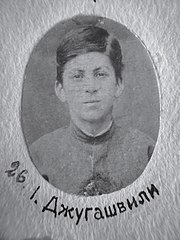
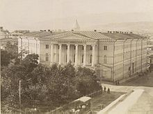

Joseph Vissarionovich Stalin[f] (born Ioseb Besarionis dze Jughashvili;[g] 18 December [O.S. 6 December] 1878 – 5 March 1953) was a Soviet politician and revolutionary who led the Soviet Union from 1924 until his death in 1953. He held power as General Secretary of the Communist Party from 1922 to 1952 and Chairman of the Council of Ministers from 1941 until his death. Initially governing as part of a collective leadership, Stalin consolidated power to become dictator by the 1930s; he formalized his Leninist interpretation of Marxism as Marxism–Leninism, while the totalitarian political system he established became known as Stalinism. Born into a poor Georgian family in Gori, Russian Empire, Stalin attended the Tiflis Spiritual Seminary before joining the Marxist Russian Social Democratic Labour Party. He edited the party's newspaper, Pravda and raised funds for Vladimir Lenin's Bolshevik faction through robberies, kidnappings and protection rackets. Repeatedly arrested, he underwent internal exiles to Siberia. After the Bolsheviks seized power in the October Revolution, Stalin joined the governing Politburo. After Lenin's death in 1924, Stalin assumed leadership of the country. Under Stalin, the doctrine of socialism in one country became central to the party's ideology. His Five-Year Plans led to agricultural collectivisation and rapid industrialisation, creating a centralised command economy. Severe disruptions to food production contributed to the famine of 1930–33. Stalin's Great Purge used the Gulag system of forced labour camps to eliminate those deemed "enemies of the working class". Stalin promoted Marxism–Leninism abroad through the Communist International and supported European anti-fascist movements. In 1939, his regime signed the Molotov-Ribbentrop pact with Nazi Germany, enabling the Soviet invasion of Poland. Germany broke the pact by invading the Soviet Union in 1941, leading Stalin to join the Allies. Despite huge losses, the Soviet Red Army repelled the German invasion and captured Berlin in 1945, ending World War II in Europe. The Soviet Union, which had annexed the Baltic states and territories from Finland and Romania amid the war, established Soviet-aligned governments in Central and Eastern Europe. Following the war, the Soviet Union and the United States emerged as global superpowers and entered a period of tension known as the Cold War. Stalin presided over post-war reconstruction and the first Soviet atomic bomb test in 1949. During these years, the country experienced another famine and a state-sponsored antisemitic campaign, culminating in the "doctors' plot". Stalin's rule was marked by forced transfers of entire populations. Before, during, and after World War II, various social classes and ethnic groups were accused of being anti-Soviet and deported to remote parts of the country as collective punishment. After Stalin's death in 1953, he was succeeded by Nikita Khrushchev, who in 1956 denounced his rule and initiated the "de-Stalinisation" of Soviet society. Widely considered one of the 20th century's most significant figures, Stalin was the subject of a pervasive personality cult within the international Marxist–Leninist movement, for whom Stalin was a champion of socialism and the working class. Since the dissolution of the Soviet Union in 1991, Stalin has notably retained popularity in Russia and Georgia as a victorious wartime leader who established the Soviet Union as a major world power. Conversely, his totalitarian government has been widely condemned for overseeing mass repressions, ethnic cleansing, executions, and famines which caused the deaths of millions.
Stalin was born on 18 December [O.S. 6 December] 1878 in Gori, Georgia,[1] then part of the Tiflis Governorate of the Russian Empire.[2][3][h] He was an ethnic Georgian and his birth name was Ioseb Besarionis dze Jughashvili[g]. His parents were Besarion Jughashvili and Ekaterine Geladze.[5] Stalin was their only child to survive past infancy.[6] After Besarion's shoemaking workshop went into decline, the family fell into poverty, and he became an alcoholic[7] who beat his wife and son.[8] Ekaterine and Stalin left the home by 1883 and began wandering, moving through nine different rented rooms over the next decade.[9] In 1888, Stalin enrolled at the Gori Church School[10] in a position secured by a family friend,[11] where he excelled academically.[12] He faced health problems: an 1884 smallpox infection left him with facial scars,[13] and at age 12 he was seriously injured when he was struck by a phaeton, causing a lifelong disability in his left arm.[14]
In 1894, Stalin enrolled as a trainee Russian Orthodox priest at the Tiflis Theological Seminary, enabled by a scholarship.[15] He initially achieved high grades,[16] but lost interest in his studies[17] and was repeatedly confined to a cell for rebellious behaviour.[18] After joining a forbidden book club,[19] Stalin was influenced by Nikolay Chernyshevsky's pro-revolutionary novel What Is To Be Done?[20] Another influential text was Alexander Kazbegi's The Patricide, with Stalin adopting the nickname "Koba" from its bandit protagonist.[21] After reading his Das Kapital, Stalin devoted himself to Karl Marx's philosophy of Marxism,[22] which was on the rise as a variety of socialism opposed to the Tsarist authorities.[23] He began attending secret workers' meetings,[24] and left the seminary in April 1899.[25]
